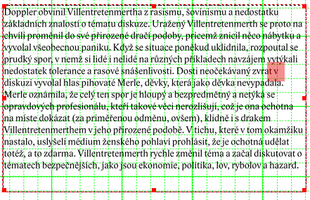
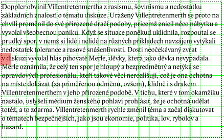
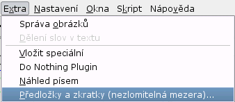
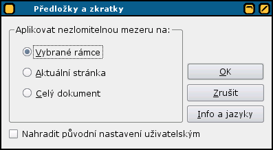

Short Words for Scribus
Copyright © 2004 Petr Vaněk
Permission is granted to copy, distribute and/or modify this document under the terms of the GNU Free Documentation License, Version 1.2 or any later version published by the Free Software Foundation; with no Invariant Sections, no Front-Cover Texts, and no Back-Cover Texts. A copy of the license is included in the section entitled "GNU Free Documentation License".
Zkratky a předložky je modul DTP programu Scribus, který vkládá speciální mezery za předložky a specifikované zkratky a.j.
Každá typografie požaduje specifické formátování různých slov, resp. jejich povolenou pozici na konci řádku, popřípadě mezislovní mezeru. Pravidla České typografie hovoří jasnou řečí: jednohláskové neslabičné předložky K, k, S, s, V, v, Z, z, slabičné O, o, U, u a spojky I, i, A, nesmějí být na konci řádky (více viz. např. typo.cz). Existuje také celá řada fyzikálních jednotek titulů nebo vojenských a akademických hodností, které mají být také ošetřeny.
Scribus umožňuje vkládat nezlomitelnou mezeru pouze manuálně, což velice zdržuje a ve velkých objemech textů nevyhnutelně vede k těžko dohledatelným chybám. Podle pro systém TeX určeného programu vlna, páně Olšáka, jsem napsal modul, který automatizuje zdlouhavou a nezáživnou robotu.
Obrázek textového rámce dokumentu obsahuje neošetřený text. Chybný zlom textu je zvýrazněný červenou barvou.
Ukázka textu před aplikací
Stejný text po spuštění Zkratek a předložek. Text je lámán před předložkou – pomocí tzv. nezlomitelné mezery.
Ukázka textu po aplikaci
Jestliže máte modul úspěšně nainstalován, spustíte jej z menu Extra položkou Předložky a zkratky (nezlomitelná mezera).... Následné okno aplikace vám nabídne:
Spuštění Zkratek a předložek
Dialogové okno aplikace
Zpracuje text pouze ve vybraných textových rámcích.
Zpracuje text všech textových rámů strany, na které uživatel právě pracuje.
Zpracuje text všech textových rámů dokumentu.
Jestliže máte vytvořený vlastní soubor s konfigurací modulu, můžete zvolit, zda vaše nastavení přepíše standardní nastavení nebo se k němu připojí. Nastavení provedete v: ~/.scribus/scribus-short-words.rc.
Nejjednodušší instalace modulu je pochopitelně pomocí balíčkovacího systému vaší distribuce. Prohlédněte si web aplikace Scribus (http://www.scribus.net), zda tam nejsou připravené balíky právě pro vás (např. Fedora, SuSE, Gentoo, Mandrake, or PLD.
Jestliže nenajdete odpovídající balíček (nebo z jakéhokoli jiného důvodu), zkuste si modul přeložit ze zdrojových kódů – a to klasicky:
#./configure # make # make install
V některých případech je potřeba zadat jinou cestu k souborům Scribusu. To provedete při ./configure --prefix=/path/to/scribus/previously/installed. Implicitní prefix je /usr/local, kam bývají obvykle instalovány dodatečné aplikace. Na svém Gentoo používám ./configure --prefix=/usr, abych splnil podmínky Scribus ebuildu.
Jestliže se během překladu objeví nějaká chyba, prostudujte nejdříve, jaké je třeba nainstalovat potřebné knihovny. Poté se třeba zeptejte v emailové konferenci.
Modul Zkratky a předložky používá globální konfigurační soubor scribus-short-words.rc, který obvykle bývá v adresáři /usr/local/lib/scribus/plugins. Skutečné umístění závisí na tom, kam je ve vaší distribuci instalován Scribus. Konfigurační soubor nepotřebuje složitý popis. Ve zkratce – soubor obsahuje seznam(y) zkratek, předložek a dalších slov, uvozených nebo následovaných mezerou oddělených čárkou. Pozice mezery ukazuje, kam bude vložena nedělitelná mezera. Každý seznam musí začínat kódem jazyka, kterému je určen a končit čárkou. Např. Česká a Anglická konfigurace:
# English stuff START here en=Dr. ,Dr ,Mr. ,Mr ,Mrs. ,Mrs ,Ms. ,Ms ,Prof. ,Prof ,Rev. ,Rev , en= Kg, kg, g, mg, oz, lb, cwt, km, Km, m, cm, mm, # Czech short words START here ## hanging conjunctions cs=K ,k ,S ,s ,V ,v ,Z ,z ,O ,o ,U ,u ,I ,i ,A , ## physics and math cs= kg, g, m, cm, mm, l, hl, s, %,
Jestliže chcete používat vlastní nastavení, např. nový jazyk, vytvořte si ve vašem skrytém adresáři programu Scribus soubor scribus-short-words.rc, tedy celou cestou ~/.scribus/scribus-short-words.rc a v okně modulu poté zvolte, zda chcete nové nastavení připojit nebo jím staré přepsat.
Uvítám každou relevantní připomínku k nastavení nebo funkci programu.
Short Words for Scribus Copyright 2003, 2004 Petr Vaněk, <petr@yarpen.cz>
This program is free software; you can redistribute it and/or modify it under the terms of the GNU General Public License as published by the Free Software Foundation; either version 2 of the License, or (at your option) any later version.
This program is distributed in the hope that it will be useful, but WITHOUT ANY WARRANTY; without even the implied warranty of MERCHANTABILITY or FITNESS FOR A PARTICULAR PURPOSE. See the GNU General Public License for more details.
You should have received a copy of the GNU General Public License along with this program; if not, write to the Free Software Foundation, Inc., 675 Mass Ave, Cambridge, MA 02139, USA.